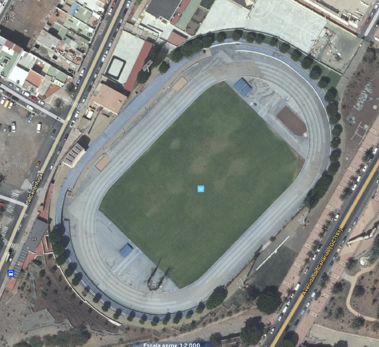
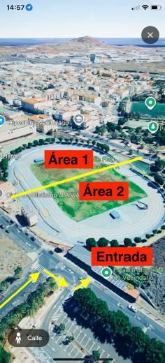
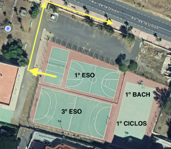
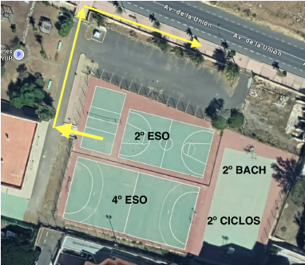

Información General
Justificación y contextualización
El IES Santa Lucía realiza la convivencia escolar con toda la comunidad de alumnado y docentes con actividades Lúdico Deportivas el viernes 9 de octubre de 2026.
La jornada se llevará a cabo en las instalaciones municipales del Estadio Municipal de Vecindario, en los Llanos (Balos). (Ver Mapa)
Realizando dinámicas, actividades y acciones cuyo objetivo es mejorar las relaciones y la convivencia de toda nuestra comunidad educativa.
Creada por nuestro claustro, alumnado colaborador, y con la presencia de profesionales de club deportivos y empresas de eventos lúdicos de nuestra comunidad.
Y respaldados por el gabinete de seguridad, protección civil y policía local, los medios de comunicación municipales y las autoridades, concejalía de deportes y educación de nuestro ilustre Ayuntamiento de Santa Lucía de Tirajana.

Normas y Requisitos
Autorizaciones
- Las autorizaciones para la salida tendrán de plazo de entrega por parte del alumnado al tutor o tutora hasta el 2 de octubre.
- El 5 de octubre el vicedirector recogerá las autorizaciones.
- El alumnado que no entregue dicha autorización no podrá acudir a dicha jornada y se deberá quedar en el centro realizando tareas (quizás elaborar algunas tareas para ese alumnado).
En ningún caso, y bajo ningún pretexto los tutores legales podrán ir a buscar al alumnado al Estadio Municipal. El alumnado sale del centro y vuelve al centro al terminar la jornada escolar.
Los horarios de la jornada escolar comprenden todas las franjas horarias del día señalado, de 8:00 a 14:00 horas.
Logística de la Jornada
Para la jornada se requiere llevar:
- Ropa de deportes y calzado de deportes.
- Gorra y protector solar.
- Agua.
- Bañador y toalla.
- Ropa de cambio.
- Desayuno.
Desayuno
El alumnado y docente que precise del desayuno de la cafetería lo ha de reservar el día anterior a la jornada.
Recogiendo la talega a las 8:00 horas del día de la jornada.
Ropa Identificativa
Personal y Docentes
- Monitores DAMASI: Vestimenta de empresa
- Monitores UAVA: Vestimenta del club
- Docentes: Chalecos Reflectantes
- Alumnado colaborador: Insignias
Alumnado por niveles (Camisetas)
Roja
Azul
Blanca
Negra
Verde
Camiseta
Camiseta
Organización en el Estadio
Lugar de la convivencia (Foto/ Zonas/ Guardias)
El estadio estará dividido en dos grandes Áreas (1 y 2). En cada área se desarrollarán las diferentes actividades, que tendrán un cuadrante por niveles (ver anexo de área). El recinto contará con:
- Áreas y Estaciones deportivas.
- Zonas de descanso.
- Zonas de seguridad (botiquín).
- Zona punto de hidratación y Zona fruta.
- Carpas, Baños y Gradas.

Acomodación y Funciones
Al llegar al Estadio Municipal de Vecindario, los compañeros/as del DAC se encargan de acomodar y distribuir a los grupos. Se pondrán etiquetas que identifican a cada nivel.
Los docentes tendrán funciones en el recinto: guardias rotativas, ayudar y participar en las dinámicas de las actividades, ayudar a los monitores del UAVA, Damasi y el DAC. Todas estas funciones irán rotando para que todos los docentes puedan disfrutar de esta jornada de convivencia.
Se establecerán puestos de guardia para controlar los baños, la puerta de acceso al recinto, así como las zonas no transitables del recinto.
Dinamización de la Jornada
- UAVA (Unión Atlética Vecindario y Agüimes): Salto de longitud, pértiga, relevo, etc.
- Docentes: Juegos tradicionales, Carrera de Saco, Pañuelito, Cuerda, briley, etc.
- DAMASI: Hinchables acuáticos.
- Alumnado colaborador.
Distribución y Horarios
Distribución de los grupos para la salida
- A las 8:00 horas los grupos suben al aula grupo, el dia de la jornada no habrá optativa (los docente que imparten optativas se les asignará el grupo acudir) el docente los recibe y pasa lista.
- Se entregará al docente de 1º Hora la lista del alumnado (dos copias) que ha entregado la autorización, si encuentra alumnado que no ha entregado autorización, lo deriva a la zona habilitada en el centro.
- Se dejará una copia en el tablón de anuncios de vicedirección y la otra se la lleva el docente que acompaña al grupo a la salida.
Docentes Acompañantes
(Ver anexo de cuadrante). Salvo excepción, los docentes que acompañan a los grupos serán los docentes que tienen más horas lectivas en el día de la Jornada.
El docente que acompaña debe de estar en la zona de salida y con el grupo asignado a la hora y lugar establecido en el anexo cuadrante.
En la cabecera de la salida se asignará un docente conocedor del trayecto, que ira identificado con el chaleco reflectante.
Salida Escalonada - Grupo A
Niveles: 1º ESO; 3º ESO; 1º BACH; 1º Ciclos
- 8:20 horas: Baja a las canchas y se agrupan por grupos y niveles según se muestra en la imagen.
- 8:30 horas: Salen del centro con los docentes acompañantes realizando el recorrido en dirección al Estadio Municipal de Vecindario.
- 9:00 horas: Llegada al Estadio Municipal de Vecindario. Recibimiento y acomodo.

Regreso - Grupo A
- 13:00 horas: Salida del Estadio con los docentes acompañantes realizando el recorrido en dirección al IES Santa Lucía.
- 13:30 horas: Llegada al IES Santa Lucía. Recibimiento y acomodo en las canchas o mesas del jardín.
Salida Escalonada - Grupo B
Niveles: 2º ESO; Aula ENCLAVE; 4º ESO; 2º BACH; 2º Ciclos
- 8:35 horas: Baja a las canchas y se agrupan por grupos y niveles según se muestra en la imagen.
- 8:45 horas: Salen del centro con los docentes acompañantes realizando el recorrido en dirección al Estadio Municipal de Vecindario.
- 9:15 horas: Llegada al Estadio Municipal de Vecindario. Recibimiento y acomodo.

Regreso - Grupo B
- 13:10 horas: Salida del Estadio con los docentes acompañantes realizando el recorrido en dirección al IES Santa Lucía.
- 13:40 horas: Llegada al IES Santa Lucía. Recibimiento y acomodo en las canchas o mesas del jardín.
Para la salida del Estadio Municipal de Vecindario todo el alumnado debe de estar sentado en las gradas a las 12:45 horas. Preparándose para el regreso. Se agrupan por grupos y niveles.